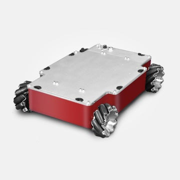

</>
Advait Rajesh Tare
Master's student at Northeastern University
I am currently enrolled in Northeastern University as a Master's student in Software Engineering Systems and I aspire to be a Full Stack Developer. I completed my undergrad in Computer Science from Atharva College of Engineering, affiliated to the University of Mumbai.
Internship
Intern at the SITIP (Summer Industrial Training and Internship Program on Data Analytics using Python)
June 2019 - July 2019
Gained insight into the various concepts of Data Science and Analytics and Python, after which, worked on projects by applying practical knowledge in the internship in association with IBM and CISCO.
Gained introductory experience on the following technologies
- Basics of Python Programming
- Advanced Python Programming concepts
- Data Analysis with Pandas Dataframe
- Data Visualization Technniques using Python
- Spreadsheet editing and mailing using Python
- Node-Red applications and deployment using IBM Cloud
Projects
Analysis of Student's Performance
Developed a project that predicted and analyzed the GPA of students by taking into consideration the grades obtained in the previous semesters as well as the records of ex-students. Considerations also included external factors affecting the grades like social life, age etc. This will aid the faculties in helping students better academically
Linear Regression, Random Forest, Support Vector Machine
Fast Food Delivery App
Developed a Fast-Food ordering website from scratch with Admin rights for the owner to Add, Delete and Update different items/prices. It also consisted search and filter options for different types of cuisines.
HTML, CSS, Node.js, Express.js, MongoDB, React.js
Online Voting System
Developed a webpage using HTML, CSS and MySQL to edit database as per votes entered by the user. It also consisted of admin rights which allowed the admin to check the number of votes recieved by each registered candidate.
HTML, CSS, MySQL, PHP
Automated Attendance Using Face Recognition
Developed a project to concentrate on implementing face detection and recognition algorithms using Image Processing which detected the frontal faces of students as they entered school. The system performed a facial recognition against a database of current students
Image Processing, OpenCV
Dragon Ball Z Game
Developed a game using the module pygame as a part of the OSTL Project. The game consisted of Goku from the popular anime television series Dragon Ball Z and goblins as enemies which Goku had to defeat to get the 7 dragon balls. The movement of the character was demonstrated by using multiple images that kept changing rapidly
Python, Pygame
Level 2 Encryption-Decryption Coding System
Set up a Level 2 Encryption-Decryption Coding System which encoded the inputted message multiple times (number of times entered by the user) and then sent to the receiver. Once received, it decodes into the original message. Data Integrity is maintained, and the transmission faces no data privacy threats
Java

Omni Surface Rover
Led my team to design an Omni Surface Rover for military purposes using 3D printed Hybrid Mecanum Wheels. It was made to work using Arduino and Bluetooth configuration. The Rover was presented in the technical fest of our undergrad college – IEE TECHITHON and won the prize of the most liked project.
IoT, Android Studio
Paper Publications
Published a manuscript successfully in the Volume-11 Issue 2 March-April 2020 edition of International Journal of Advanced Research in Computer Science (IJARCS)
Sublime measures of Data are being produced by online business, different applications, banks, schools, and so forth by virtue of advanced innovation. Pretty much all industries are endeavoring to adjust to this gigantic data. Big Data phenomenon has begun to gain noteworthiness. However, this massive amount of data may also lead to many privacy issues, which make Big Data Protection a major concern for any organization. Privacy Preservation methods are becoming progressively significant in order to tackle such security issues. Therefore, the paper investigates different security dangers and, in this manner, expresses the techniques for their avoidance. A general point of view for privacy preservation has been recommended.
View publicationEducation
Northeastern University, Boston, MA
Master's in Software Engineering Systems
Grades in semester 1 : 3.852/4.00
Atharva College of Engineering, Mumbai University, MH, Mumbai
Bachelors in Computer Engineering
Recieved a cumulative gpa of 8.78 out of 10 over 8 semesters